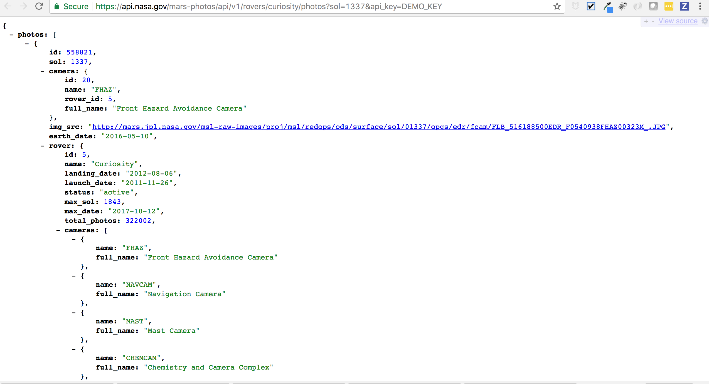
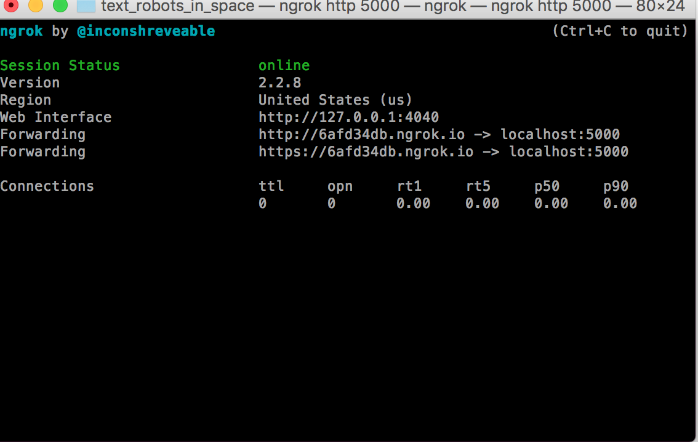

APIs 101
By Jessica Garson
Text (646) 647-3536
What makes a cool idea?
API + Another API
For any crazy idea you have - there is a likely an API for it
What's an API?
APIs are everywhere!
We use them everyday all the time
When get your email on your phone or when your calendar is synced. That's made possible because of an API.APIs are how Computers Talk
APIs are a way for two programs to share information or perform an action.
When you talk to the computers you can type things.
Are APIs and Datasets the same thing?
Datasets
Datasets- static (unchanging) files - a .csv, or a database dump If the info changes, you're out of date.APIs
APIs- a live connection to a resource. If the information changes, you get the latest.So what do we mean when say API
This typically refers to a host of hosted web services that you can extend to add some useful service or content to your app.GitHub?
What's that?pip
pip install requestsyou may need to type pip3
Or pip3 install requestsConda
conda install requestsREST
REST services allow you to interact with a web service the same way you interact with HTTP.
GET
When we get a list of tweets.POST
When you write a tweet.PATCH/PUT
When you update a tweet.DELETE
When you delete a tweet.200
Good500
BadExamples of REST APIs
Popular examples include the New York Times, Tumblr, Etsy, and TwilioSDK
JARGON FLAG!Webhooks
Signals that you can send to your application anytime the state of you care about changes.Examples of Webhooks
Examples Include Particle, Sendgrid and Twilio.Streaming
Sometimes known as a realtime connection. What happens is that it opens a connection and gives you serial data as it happens. Most popular example is Twitter. You usually need a "worker" running to work with this data.Ummm Jess, what do you mean by worker

Working with Vendors
- Examples
- Security?
- What is the call limit?
- What is the record limit?
- What documentation do you have?
- What fields are exposed?
OSDI
A group trying to push progressive organizations to have standards around APIs.Serialization

JSON
How to Work with JSON
Most languages have a way to work with JSON built in.XML

XML Parsers
ngrok
Let's text robots in space
Text (414) 240-2445
Let's make something cool
Twilio + The Mars Rover APIWhat Our App Does
First, Twilio will send a POST request to /sms.A function is called
The inbound_sms function will be called.A request is made
A request to the Mars Rover API will be made, receiving a JSON response that then gets parsed to acquire an “img_src” URL to a photo from Mars.We get back the picture
Your /sms route responds to Twilio’s request telling Twilio to send a message back with the picture we retrieved from the Mars Rover API.Security
What do we need to keep in mind when working with APIs?A note
Let's talk about the future.Questions
Keep in Touch
Email - Jessica.Garson@gmail.comTwitter - @JessicaGarson
GitHub - JessicaGarson